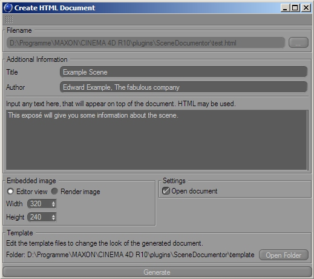

The "Create HTML Document" Command
This is the most complex command in SceneDocumentor. It allows you to export an exposé of the scene in HTML format.
When you call this command, a dialog window will appear:

Filename
By clicking the button, you can specify the filename of the HTML document that will be generated.
Additional Information
Here you can specify some addition text information that can be included in the HTML document using placeholders.
Title
Specify a title for the document here. By default, this is the filename of the scene. The placeholder %DOC_TITLE% will insert the title into the HTML document.
Author
Specify an author name for the document here. By default, this is your name and company, as stored in your CINEMA 4D license information. The placeholder %DOC_AUTHOR% will insert this information.
Free Text
In this big text box, you may input any text (including HTML code). The placeholder %DOC_INTROTEXT% will insert this text.
Embedded Image
It is possible to include an image of your scene in the HTML document. If the placeholder %DOC_IMAGE% is found in a template, SceneDocumentor will render an image and save it along with the HTML document. The image is also named like the HTML document (e.g. if the document is named "foo.html", the image file will be named "foo.jpg").
Editor view / Render image
Here you can choose if the image will appear in editor graphics or fully rendered. Rendering a big scene may take a long time and look nice, while the editor setting is very fast.
Width / Height
Specify the dimensions of the image here (in pixels).
Settings
More settings for the document generation.
Open document
If this option is checked, the HTML document will be opened in your system's default browser after it has been created.
Template
Here you get a short information about the HTML template files. Clicking the button will open the template folder in the Explorer/Finder.
Generate
Click this button to start the document generation.